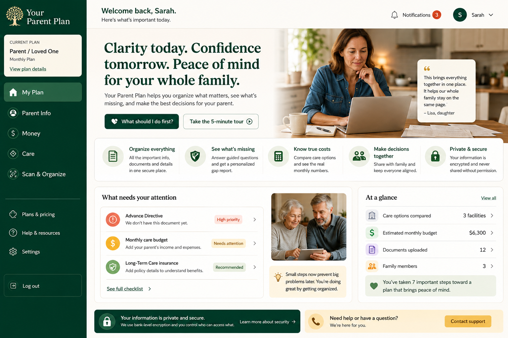

One place to organize what matters, see what’s missing, and make confident decisions.
Your Parent Plan helps you pull together the information, money, documents and care decisions that usually live in different folders, text threads and people’s heads.

Families usually organize this stuff after something happens.
Then everyone is searching for documents, asking who knows the insurance details, trying to understand finances, and comparing care options under pressure.
Get ahead of it while you still have time to think.
Your Parent Plan turns a messy collection of information and decisions into a clear next-step plan you can work through over time.
Less “Where do we even start?”
Your plan shows missing items and surfaces the next few things worth doing.
Compare real facility costs against monthly income, obligations and savings.
Use the preparedness checklist and Essentials to spot gaps before they become urgent.
Keep legal, insurance, contacts and emergency basics organized together.
Save facilities, build true monthly costs and compare pros and cons side by side.
Upload or scan documents, review extracted information, then confirm where it belongs.
A practical workspace, not another pile of information.
See what’s complete, what still needs attention, and what to do next.
Core records, health & emergency basics, legal and insurance information.
Income, obligations, savings and care affordability in one view.
Add facilities, build true costs, capture pros/cons and compare.
Bring paperwork into the plan without retyping everything.
Start free and upgrade when you need the full planning tools.